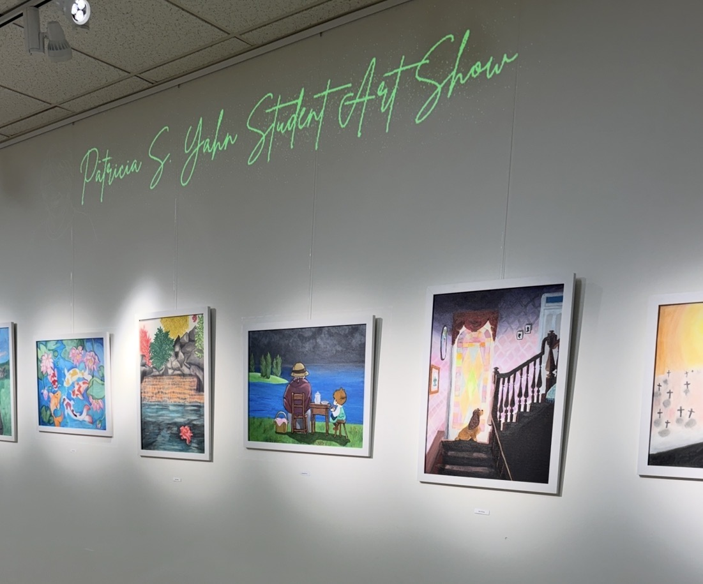
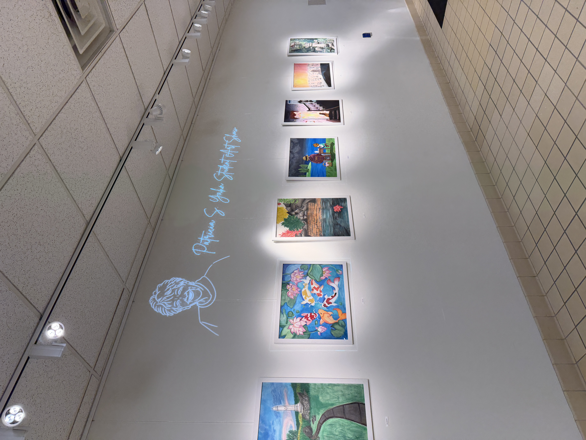
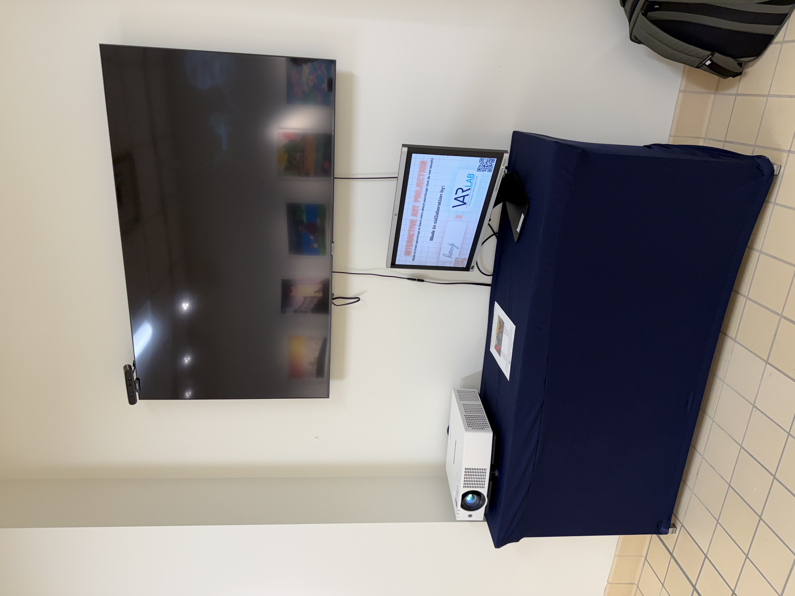

The Spring 2026 Yahn Art Show Projector Installation was an interactive gallery project that used a depth camera and Processing 4 to connect physical artwork with responsive digital information. I created custom software that detected when a viewer crossed in front of a real image, then projected a visual frame around the artwork and displayed related details such as the artist name, painting title, and date of creation.
This project combined creative coding, projection design, camera-based interaction, and exhibition display into one installation. The goal was to make the gallery experience feel more active and informative without replacing the physical artwork itself. Instead, the digital layer responded to the viewer’s presence and added context only when someone engaged with the piece.
The installation demonstrates my interest in interactive media, immersive technology, and practical software development for public-facing creative spaces. It also reflects my ability to build a working prototype that blends technical systems with visual design and audience experience.

